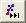

Hilfsmittel Nichtlinearer Kurvenfit
Fitting-NLFit-Basic
Zusammenfassung
Die nichtlineare Anpassung wird bei Origin mit Hilfe des Dialogs Nichtlinearer Fit (NLFit) durchgeführt. Das Hilfsmittel NLFit beinhaltet mehr als 200 standardmäßige Anpassungsfunktionen, die in vielen verschiedenen Disziplinen verwendet werden.
 |
Um eine schnelle und einfache Anpassung ohne Öffnen des NLFit-Dialogs durchzuführen, testen Sie das Minitool Quick Fit.
|
Origin-Version mind. erforderlich: 8.5
Was Sie lernen werden
- Eine Anpassung mit einer Standardanpassungsfunktion durchführen
- NLFit-Einstellungen mit Hilfe der Funktion Neu berechnen ändern
- Mit einer benutzerdefinierten Funktion definieren und anpassen
Daten mit einer Standardfunktion anpassen
- Klicken Sie auf Datei: Öffnen..., um das Projekt Intro_to_Nonlinear Curve Fit Tool.opj im Verzeichnis \Samples\Curve Fitting zu öffnen und den Ordner Built-In Function im Projekt Explorer auszuwählen.
- Wählen Sie bei aktivem Graph1 im Menü Analyse: Anpassen: Nichtlinearer Fit, um den Dialog NLFit aufzurufen, und wählen Sie dann Gauss in der Auswahlliste Funktion:
- Die Initialisierungsparameterwerte werden auf der Registerkarte Parameter automatisch zugewiesen, da die Standardfunktionen Parameterinitialisierungscode enthalten.
Wenn Sie zur Registerkarte Residuen wechseln, können Sie die aktuellen Residuen sehen und bewerten, ob die aktuellen Anpassungsergebnisse akzeptabel sind.
- Beachten Sie, dass eine mit Hilfe der Initialisierungsparameterwerte gezeichnete angepasste Kurve im Diagramm gezeigt wird.
- Klicken Sie auf die Schaltfläche Fit bis konvergiert . Um zu prüfen, ob die Anpassungsoperation erfolgreich war, klicken Sie auf die Registerkarte Nachrichten und beachten Sie die Anzahl der Iterationen, den Wert des reduzierten Chi-Quadrats, den R^2-Wert etc.

- Klicken Sie auf OK. Das Berichtsblatt FitNL1 mit den Anpassungsergebnissen, einschließlich Parameterwerte und Fit-Statistik, wird erstellt.
- Öffnen Sie den Dialog des nichtlinearen Kurvenfits erneut, indem Sie auf das grüne Schloss in der oberen linken Ecke des Diagramms klicken und Parameter ändern auswählen.
- Wechseln Sie zur Registerkarte Parameter, ändern Sie den Wert von xc in 25 (beachten Sie, dass Sie den Wert durch einen Doppelklick auf die Zelle bearbeiten können) und aktivieren Sie das Kontrollkästchen Fest.
- Klicken Sie wieder auf die Schaltfläche Fit bis konvergiert und dann auf OK.
- Im Berichtsblatt können Sie sehen, dass das Festlegen des Werts von xc auf 25 einen Standardfehler von 0 ergibt.

Mit einer benutzerdefinierten Funktion definieren und anpassen
In diesem Abschnitt soll gezeigt werden, wie Sie Ihre eigene Anpassungsfunktion definieren und sie im Hilfsmittel Nichtlinearer Kurvenfit verwenden.
Unsere Funktion lautet y=y0+a*exp(-b*x).
- Mit der Projektdatei, die im ersten geöffneten Abschnitt verwendet wurde. Wählen Sie im Menü Hilfsmittel: Fitfunktionen erstellen, um den entsprechenden Dialog Fitfunktionen erstellen aufzurufen.
- Klicken Sie auf der Seite Ziel auf Eine neue Funktion erstellen und klicken Sie dann auf die Schaltfläche Weiter, um zur Seite Name und Typ zu gelangen.
- Geben Sie der Funktion auf der Seite Name und Typ einen Namen und wählen Sie einen Funktionstyp aus. Diese Funktion wird per Standard in der Kategorie Benutzerdefiniert abgelegt.
- Legen Sie MeineFunktion als den Funktionsnamen fest.
- Wählen Sie Ausdruck aus der Liste Funktionstyp. Beachten Sie, dass das linke Bedienfeld Hinweise zu dem ausgewählten Funktionstyp anzeigt.
- Klicken Sie auf die Schaltfläche Weiter, um zur Seite Variablen und Parameter zu gelangen.
- Stellen Sie auf der Seite Variablen und Parameter sicher, dass für Unabhängige Variablen x und für Abhängige Variablen y angegeben ist. Geben Sie dann die durch Komma getrennten Werte y0, a, b in das Textfeld Parameter ein. Klicken Sie auf die Schaltfläche Weiter.
- Führen Sie auf der Seite Funktionskörper die folgenden Operationen durch:
- Legen Sie die Initialisierungswerte für die Parameter wie unten fest.
- Geben Sie im Bearbeitungsfeld Funktionskörper y0+a*exp(-b*x) ein.
- Verwenden Sie die Schnellprüfung, um die Gültigkeit der aktuellen Funktion zu testen. Nachdem Sie einen Wert für die unabhängigen Variablen X eingegeben haben, klicken Sie auf die Schaltfläche Auswerten
 . Sie erhalten einen Ausgabewert der abhängigen Variablen Y, der verwendet werden kann, um die Gültigkeit dieser Funktion zu prüfen.
. Sie erhalten einen Ausgabewert der abhängigen Variablen Y, der verwendet werden kann, um die Gültigkeit dieser Funktion zu prüfen.
- Klicken Sie auf die Schaltfläche Fertigstellen, um die Definition dieser Funktion abzuschließen.
- Öffnen Sie den Projekt Explorer (Ansicht: Projekt Explorer) und wählen Sie den Ordner User-Defined Function.
- Markieren Sie Spalte A und B in [Book1]Sheet1 und wählen Sie im Menü Analyse: Anpassen: Nichtlinearer Fit, um den Dialog NLFit zu öffnen. Wählen Sie die Kategorie Benutzerdefiniert und die Funktion MeineFunktion auf der Seite Funktionsauswahl und der Registerkarte Einstellungen:
- Indem Sie wiederholt auf die Schaltfläche 1 Iteration klicken, können Sie die Änderung in den Parameterwerten sowie die zunehmende Konformität der angepassten Kurve verfolgen.
- Klicken Sie auf die Schaltfläche "1 Iteration"
 .
.
- Klicken Sie erneut auf die Schaltfläche 1 Iteration .
- Klicken Sie auf die Schaltfläche Fit bis konvergiert.
- Klicken Sie auf die Schaltfläche OK, und das Berichtsblatt FitNL1 der Anpassungsergebnisse wird erstellt. Hier finden Sie die Parameterwerte für die beste Anpassung und weitere Fit-Statistiken.